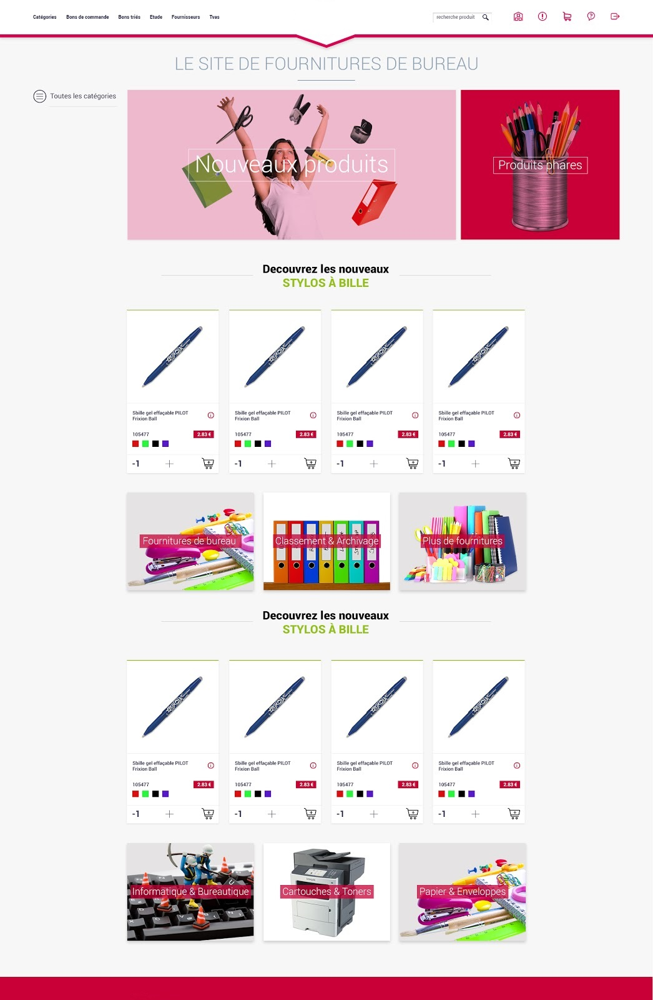
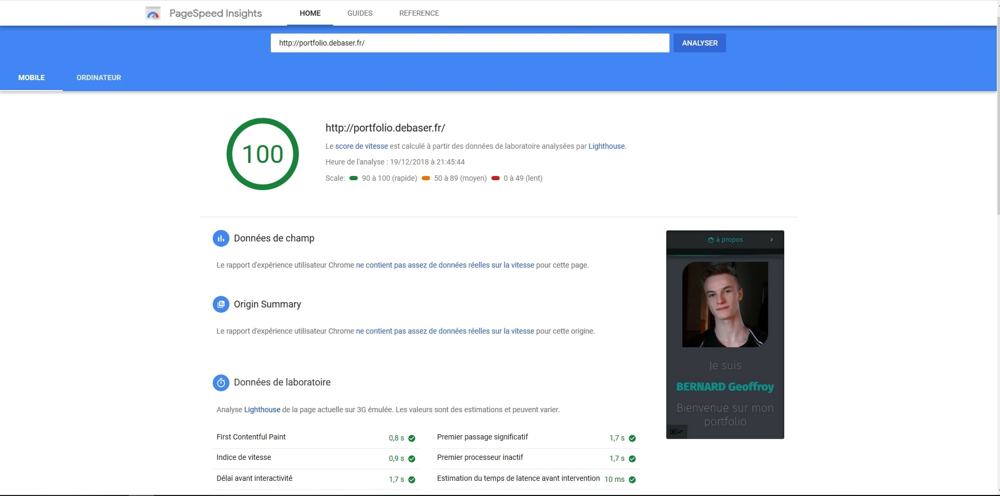

Trust-ePot
Trust-ePot is a DUT group project. It's a web application that allow its users to link their IoT sensors on plants to the website. It will then tracks and display statistics such as temperature, humidity, pH, light over time. By comparing them with statistics from a database containing over 40000 plants we can notify the user if a stat is above or below the average, like if a plant needs watering.
It is a very important project to me and to the team I've worked with, to the point that a year later we're still in touch trying to bring the project to life.

Stocking and group purchasing web application
During my 10 weeks internship I realised a Stocking and group purchasing web application for a group of bailiff offices. I made it by myself and had to take into account a lot of aspects of programmation, such a conception or production, dealing with tasks such as bill generation in pdf, daily mail notifications, optimized products adding system to improve user experience. My best experience was working with the company designer.
La Salière
"La Salière" is a DUT group projet realised over a week collaboring with the Luxembourgish company Awevo. The goal was to link an E-shop we made using the CMS Magento and its REST API to link an IoT button (the same way as amazon's dash button). My group made it to the first place of the contest ranked by teachers and the company CEO.
La Postiterie
"La Postiterie" is a group project in the context of the Professional licence CIASIE. It is a web application that allow its users to take a picture of post its on a wall, it will then extract the post-its from the picture and upload a scheme containung them onto the user's google drive.
Bytesclicker
Byteslicker is one of my most important personal project , I invested a lot of time into it. It is a browser game, a "clicker" inspired from the game Cookie Clicker. I developped two versions both using mainly Javascript.
Beginner at the time, I first made a basic version working only on google chrome, it's about clicking on a bitcoin to acquire points and buy upgrades.
Later I acquired a lot of knowledge and wanted to make another version of the game, this time the theme is space and it has a few eastereggs with the first one? This time it's about upgrading a spaceship by shotting with it on a bitcoin planet.

Portfolio
I had the idea of this protfolio by looking at the Discord web application, mostly for the colors, curved screen gave me the idea for the sliding effect.
I made it using the Jquery library without any css framework in order to keep it a bit challenging and orignal
Here's a quick summary of the technologies I already used
Php : CakePhp, Codeigniter, Laravel
Javascript : NodeJs, React, Vuejs, Jquery
Data & Database : Mysql, NoSql (MongoDB), REST, SOAP, Json, Xml, Xsl
Html, Css : Sass, Postcss, Bootstrap, Material Design Boostrap, Materialize
Collaborative tools : Git, Docker, Trello, Agile (Scrum).
Miscelleanous : Java, Python, Cobol, Bash,Visual Basic, Assembleur x86, Ruby